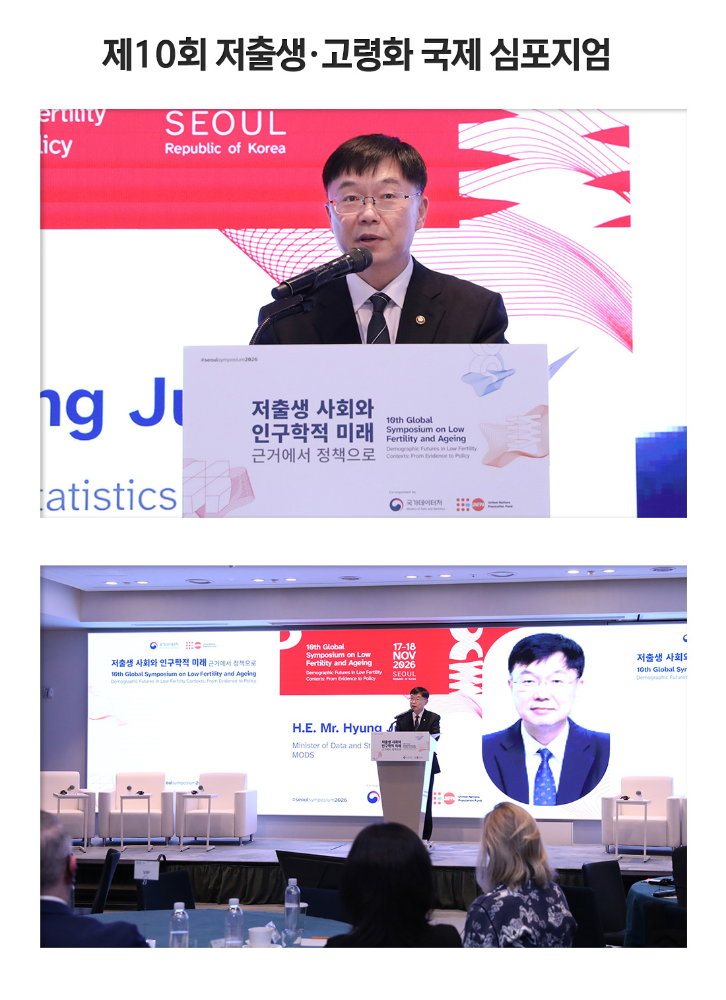
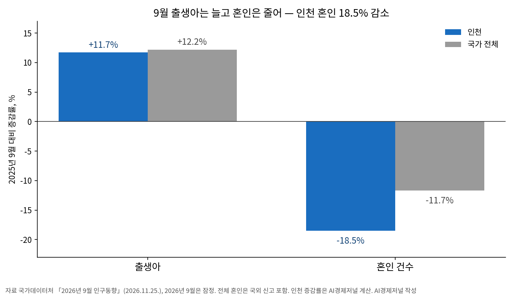

9월 출생아 12.2% 증가·혼인 11.7% 감소, 인천 혼인 감소율 18.5%
출생아 2만5113명, 혼인 1만6299건
3분기 합계출산율 0.90명, 인천 0.93명
인천 9월 출생 1625명·사망 1624명
AI경제저널=김갑봉 기자 | 국가데이터처가 지난 25일 낸 「2026년 9월 인구동향」에서 9월 출생아는 2만5113명이다. 1년 전보다 2731명(12.2%) 많고 모든 시도에서 늘었다.
같은 달 혼인은 반대로 움직였다. 9월 혼인 건수는 1만6299건으로 1년 전보다 2156건(11.7%) 적다. 혼인은 8월에 1.2% 줄었고 9월에 감소 폭이 커졌다.
인천의 9월 혼인 건수는 950건으로 1년 전 1166건보다 216건(18.5%) 적다(AI경제저널 계산). 국가 전체(국외 신고 포함) 감소율보다 6.8%포인트 높다(AI경제저널 계산).
출생아 1~9월 21만8896명

올해 1~9월 출생아는 21만8896명으로 1년 전 같은 기간보다 14.3% 많다. 2025년 한 해 출생아 25만4341명의 86.1%다(AI경제저널 계산).
3분기 출생아는 7만3091명으로 1년 전보다 12.1% 많다. 3분기 합계출산율은 0.90명으로 0.09명 높다. 여자 1명이 평생 낳을 것으로 예상되는 평균 출생아 수다.
출산율은 30대에서 가장 크게 올랐다. 3분기 30~34세 여자 1000명당 출생아는 82.9명으로 1년 전보다 8.2명, 35~39세는 62.0명으로 8.7명 많다.
국가데이터처 집계에서 3분기 출생아의 63.5%가 첫째아다. 첫째아를 낳은 부모의 평균 결혼생활 기간은 2.41년으로 1년 전보다 0.02년 짧다.
인천 1~9월 출생아 14.5% 증가
인천의 9월 출생아는 1625명으로 1년 전 1455명보다 170명(11.7%) 많다(AI경제저널 계산). 1~9월 출생아는 1만4314명으로 1년 전보다 14.5% 많다.
인천의 3분기 합계출산율은 0.93명으로 1년 전보다 0.08명 높다. 국가 전체 0.90명보다는 0.03명 높다(AI경제저널 계산). 2026년 수치는 모두 잠정치다.
인천의 9월 인구 1000명당 출생아(조출생률)는 6.5명으로 국가 전체 6.0명보다 많다. 국가통계포털(KOSIS) 시도별 통계에서 인천의 9월 사망자는 1624명이다.
인천의 9월 자연증가는 1명으로 출생아가 사망자보다 1명 많다. 1~9월로 보면 인천 출생아는 사망자 1만4411명보다 97명 적다(AI경제저널 계산).

혼인 1~9월은 3.4% 증가
1~9월 혼인 건수는 18만2173건으로 1년 전 같은 기간보다 3.4% 많다. 인천도 1~9월 1만737건으로 4.8% 많다. 월별로는 7월 9.3% 늘었다가 8월 1.2%, 9월 11.7% 줄었다.
3분기 혼인 건수는 5만7799건으로 1년 전보다 490건(0.8%) 적다. 남자 초혼은 0.5%, 여자 초혼은 1.3% 늘었다. 재혼은 남자 11.2%, 여자 13.9% 줄었다.
인천의 3분기 인구 1000명당 혼인 건수(조혼인율)는 4.5건으로 1년 전보다 0.1건 낮다. 국가데이터처는 시도 혼인을 남편 주소지 기준으로 센다.
혼인 회복과 출생아 반등
한국보건사회연구원 이지혜 부연구위원은 6월 「보건복지 이슈앤포커스」 제468호를 냈다. 보고서는 혼인율이 2년 정도 시차를 두고 출생아 수에 영향을 미친다고 적었다.
혼인과 인구 요인을 넣은 모형에서 전년도 혼인 건수는 출생아 수와 양(+)의 관계를 보였다. 보고서는 최근 출생아 반등이 혼인 회복과 관련되어 있음을 시사한다고 적었다.
같은 보고서는 15~49세 여성 인구의 절대적 감소 추세가 혼인율 상승 효과를 상쇄하는 구조적 제약 요인이 될 가능성이 있다고 봤다. 혼인과 출산 결정의 연계가 약해지는 양상도 짚었다.
보고서는 장기적 추세 전환을 확정하려면 1~2년 더 관찰이 필요하다고 했다. 연구원은 보도자료 제목을 「출생아 수 반등, 일시적 반등인가 구조적 변화인가」로 달았다.
전문가가 꼽은 혼인 감소 원인, 일자리와 집
같은 연구원 김은정 부연구위원은 4월 「한국의 혼인 실태와 인식 변화」(이슈앤포커스 제463호)를 냈다. 혼인율은 2022년을 기점으로 10년 만에 반등하기 시작했다고 썼다.
보고서는 장기 혼인 감소 요인을 2025년 9월 델파이 조사로 물었다. 전문가 19명이 꼽은 1순위는 노동시장 이중구조화와 좋은 일자리 부족(8.26점, 10점 만점)이다.
2순위는 주택 가격 상승과 주거비 부담(8.11점)이다. 국가데이터처는 월별 인구동향을 두 달 뒤 말에 공표한다. 이 주기대로면 10월 인구동향은 12월 말에 나온다.
참고문헌
- 이지혜, 「최근 출생아 수 반등의 인구학적 요인 분석 및 시사점」, 『보건복지 이슈앤포커스』 제468호, 한국보건사회연구원, 2026.6.15., https://www.kihasa.re.kr/api/kihasa/file/download?seq=33746
- 김은정, 「한국의 혼인 실태와 인식 변화」, 『보건복지 이슈앤포커스』 제463호, 한국보건사회연구원, 2026.4.6., https://www.kihasa.re.kr/api/kihasa/file/download?seq=33146
- 한국보건사회연구원 미디어홍보팀, "출생아 수 반등, 일시적 반등인가 구조적 변화인가", 2026.6.15., https://www.kihasa.re.kr/api/kihasa/file/download?seq=33748
- 국가데이터처 사회통계국 인구동향과, 「2026년 9월 인구동향」, 2026.11.25., https://www.korea.kr/briefing/pressReleaseView.do?newsId=156790706
- 국가데이터처, 「월.분기.연간 인구동향(출생,사망,혼인,이혼)」, 국가통계포털(KOSIS), https://kosis.kr/statHtml/statHtml.do?orgId=101&tblId=DT_1B8000G (2026.11.26. 접속)
[사진 출처]
- [사진 1] 국가데이터처
※ 이 기사는 AI 프로그램 클로드를 활용해 작성했습니다.
관련기사
- [인구 브리핑] 외국인주민 266만명 역대 최대, 다문화 출생아는 69명 감소
- 2분기 임금일자리 40만6000개 증가, 20대 이하 5만6000개 감소
- 생계급여 선정기준 2030년 35% 추진, 인천 수급자 19만8136명
저작권자 © AI경제저널 무단전재 및 재배포, AI학습 및 활용 금지